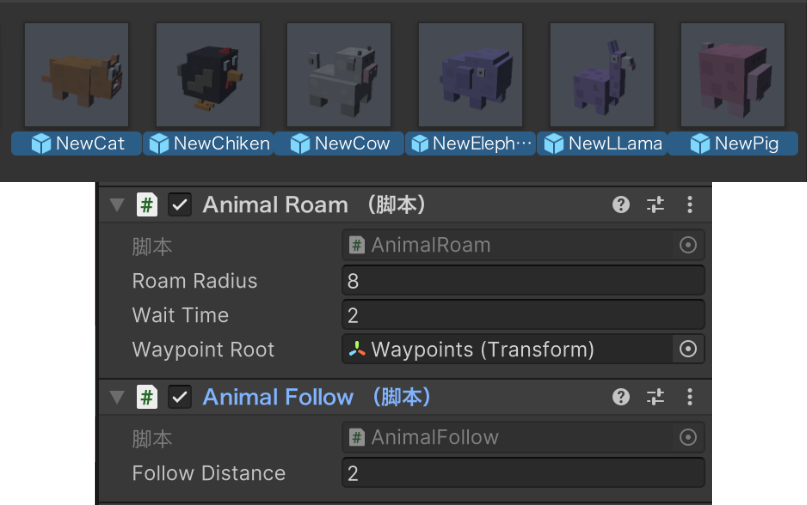
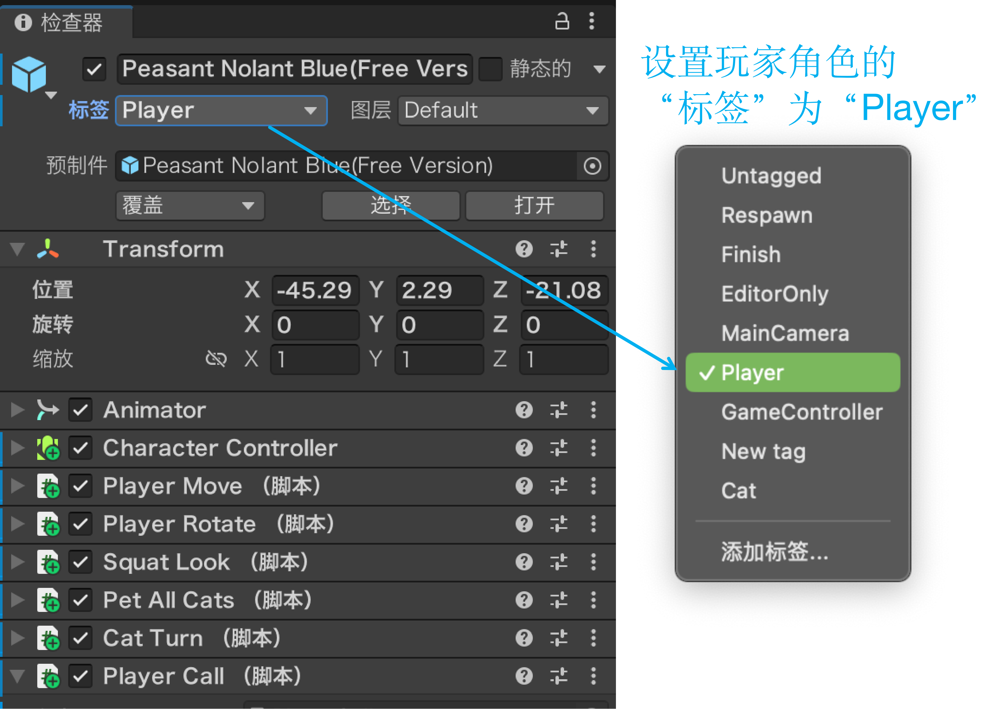
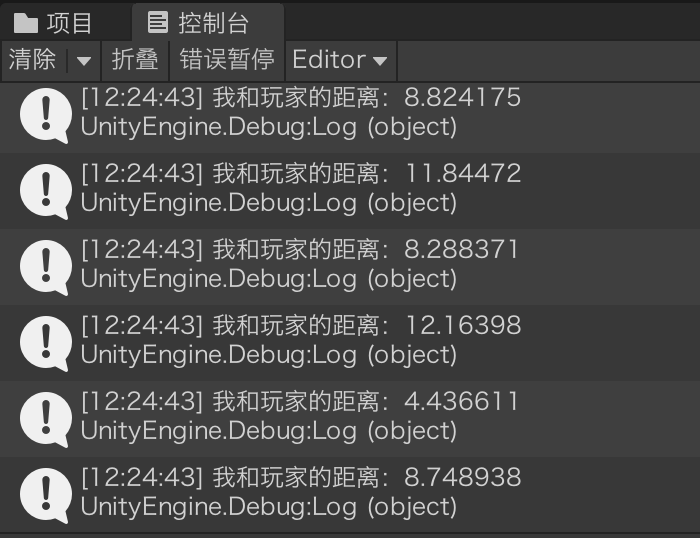
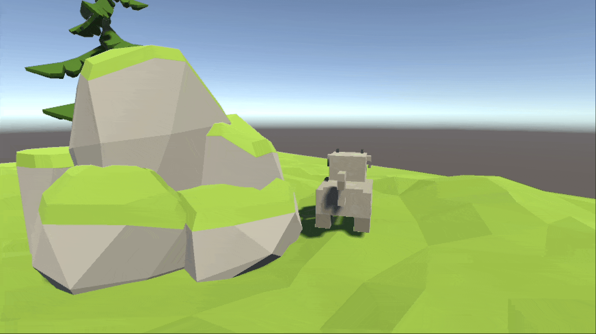

走近动物跟着走
本节学习目标

本课要做出来的效果
走到一只动物跟前、按一下 F，它就跟在你身后；再按一下，它停下来、回去自己溜达。旁边更远的动物完全不理会。
F？因为 F 是本课程统一的「交互键」——后面《拾取物品》按 F 捡东西、《NPC 对话》按 F 开始对话，用的都是它。养成「走到跟前按 F」的习惯就好。FindGameObjectWithTag("Player")Vector3.Distance 量出「我和玩家差多远」FindObjectsOfType 一次收齐场上所有动物F 切换「跟着走 / 自己溜达」，两个分支都要写全SetDestination 停在身后 2 米，散开要把距离还原整体思路 · 走近按 F，动物跟着走
要造出来的场面
草地上，动物各自溜达。你走到其中一只跟前按一下 F——它转过身，跟上你；旁边更远的动物完全不理会。
原理：这件事其实是六步
- 动物平时一直在自己巡逻，同时它随时知道「自己离玩家还有多远」。
- 你走到某只动物跟前，按下
F。 - 游戏把场上的动物逐个比一遍距离，挑出离你最近的那一只；太远的就当没按，不理你。
- 被选中的那一只切换成「跟随」，跟在你身后。
- 你再按一次
F。 - 它切回「巡逻」，继续自己走。
六步各落在哪个脚本
四列依次是：谁在做 → 这一步干什么 → 交给哪个脚本 → 用的是哪句方法、这句方法干什么。
为什么按键不能写在动物身上
按键检测如果写在动物的脚本里，场上每一只动物都会各自收到 F——按一下，所有动物一起跟着你走。可我们要的是「走近谁，谁才理我」，所以按键和点名只在玩家这一侧做，动物只负责执行。
结论：键盘是全场共用的一份输入，读它的人只该有一个。统一读、再分发：按一下 F 只触发一次，谁动、谁不动，也全由它说了算。
准备 · 脚本分工：两个新建、一个修改
三个脚本，各就各位
| 脚本 | 新建 / 修改 | 挂在哪 | 本课拿它干什么 |
|---|---|---|---|
AnimalFollow | 新建 | 动物预制体 | 找到玩家、算出距离、跟着走 |
PlayerCall | 新建 | 场景里的 Player | 听按键、挑最近的一只、喊它一声 |
AnimalRoam | 修改课件16 已有 | 动物预制体 | 自己溜达 / 定点巡逻；本课只补一个 RestartRoam() |
一句话记住：两个新脚本，一个挂动物、一个挂玩家；AnimalRoam 不用新建，后面只给它补一个方法。
新建脚本：Scripts 文件夹 → 创建 → C# 脚本
在项目（Project）窗口的 Scripts 文件夹上右键 → 创建（Create）→ C# 脚本（C# Script），再把名字改准：文件名和类名必须一模一样（AnimalFollow.cs ↔ public class AnimalFollow），差一个字母就挂不上。

挂载：脚本要挂对地方才算数
AnimalFollow → 动物预制体：双击 PreFabs 里的动物预制体，在检查器里点「添加组件（Add Component）」搜脚本名。挂预制体，每一只动物都有；只挂场景里某一只，就只有那一只会跟。
PlayerCall → 场景里的 Player：它管按键和点名，跟动物没关系，别挂到动物身上。


AnimalFollow 只挂给场景里的一只 → 只有它会跟着你，其余动物不动；PlayerCall 挂到动物身上 → 每只动物各听一次按键，按一下全跟着你；同一个脚本建出两个同名文件 → 控制台报「已存在同名类型」，整个工程都编译不过。步骤 ① · 动物算出离玩家多远
新建AnimalFollow.cs：先只写「找玩家 + 量距离」
脚本已经在「准备 · 脚本分工」里建好、挂到动物预制体了；这一步只写代码——先让它干一件事：找到玩家、量出距离。跟着走的活儿，等这一步跑通了再往里补。
还要给玩家贴个标签
脚本要跟的是「玩家」，可脚本怎么知道谁是玩家？靠标签（Tag）。选中 Player 对象，在检查器最上方把「标签（Tag）」设为 Player；贴好之后，场景里任何脚本都能凭这个标签名字把玩家找出来。

好处就在这儿：对象叫什么都行，标签说了算。这只角色叫「小美」、叫 Hero、甚至叫 Cube 都无所谓——脚本认的是标签，只要标签是 Player，就把它当玩家。对象名是给人看的，标签才是给代码认的：换角色模型、改名字，脚本一行都不用动。
标签是什么、一个对象能有几个、新标签怎么建，课件14 的「标签（Tag）」都讲过；这里只借它把玩家认出来。
脚本分两步：找一次，每帧算
代码拆成两个方法，各管一件事，别写混：
Start() —— 开局只跑一次：靠标签把玩家找出来存好。查找要满场景扫一遍，比较费，所以只做一次。
Update() —— 每帧都跑：拿存好的玩家位置，和动物自己的位置算一次距离、打印出来。位置一直在动，所以必须每帧重算，否则数字永远停在开局那一下。
// AnimalFollow.cs —— 第 1 版：先只量距离，把数字打出来看看
// 新建脚本，挂在动物身上；整段都是新的
using UnityEngine;
public class AnimalFollow : MonoBehaviour
{
private Transform player; // 玩家在哪（找到后一直留着）
void Start()
{
// —— 开局只找这一次：靠标签把玩家找出来 ——
GameObject p = GameObject.FindGameObjectWithTag("Player");
player = p.transform; // 只留位置，后面算距离够用
}
void Update()
{
// —— 每帧量一次：你走近，控制台里的数字就一路变小 ——
float d = Vector3.Distance(transform.position, player.position);
Debug.Log("我和玩家的距离：" + d);
}
}代码讲解
- 先跑通「找到玩家」这一步：脚本挂上、标签贴好，按播放，控制台稳定打出一行距离——没报错就说明玩家找对了。
- 为什么拆成两个方法：只跟开局有关的（找玩家）放
Start，每帧都在变的（距离）放Update。两样都塞Start，数字就永远不动；两样都塞Update，等于每帧满场景查找，白白掉帧。 player必须写成字段：Start里赋值、Update里使用，跨方法还要活着的东西只能放类里。写成Start里的局部变量，Update根本看不见。- 靠标签找对象：要跟的玩家和脚本不在同一个物体上，只能满场景找——
FindGameObjectWithTag，和课件14 ② 是同一种办法；它认的是标签、不是对象名（按名字找是GameObject.Find）。 - 它返回的是
GameObject：要拿位置还得接一句.transform；字段类型写成Transform，是因为只需要位置、不必留整个对象。 Vector3.Distance(A, B)就是两点直线距离：把两个position直接传进去，不用自己算平方和开根号。Debug.Log是「打印到控制台」：调试距离、朝向这类看不见的数字最顺手；正式发布前记得别留着每帧刷屏。- 标签没设对，立刻报错：
p是null，player就没赋上值，Update里去取position就是NullReferenceException，控制台红一片。先回去检查Player的标签。

Update 里，每帧重算一次。这个数字，就是接下来「多近才理我」那把尺子。步骤 ②③ · 按下 F，挑出最近的那只
新建PlayerCall.cs：按下 F，挑一只
脚本同样已经在「准备 · 脚本分工」里建好，挂在场景里的 Player 上（不是动物、也不挂预制体）。这一步让它负责三件事：按下 F → 在所有动物里找离我最近的那一只 → 只叫它。
// PlayerCall.cs —— 新建脚本：挂在 Player 上，负责按 F 挑最近的那只
// 整段都是新的
using UnityEngine;
public class PlayerCall : MonoBehaviour
{
public float callDistance = 3f; // 门槛：走到多近才允许召唤
void Update()
{
// —— 没按 F 就直接跳过这一帧 ——
if (!Input.GetKeyDown(KeyCode.F)) return;
// —— 按下 F：先拿到场上所有动物，再一只只比距离 ——
AnimalFollow[] animals = FindObjectsOfType<AnimalFollow>();
AnimalFollow nearest = null; // 目前最近的那只，开始还没有
float min = callDistance; // 最近的距离，初值＝门槛
foreach (AnimalFollow a in animals)
{
float d = Vector3.Distance(transform.position, a.transform.position); // 到它的距离
if (d < min) // 比手上最近的还近 → 换人
{
min = d;
nearest = a;
}
}
// —— 只叫最近那一只；一只都没有就不动 ——
if (nearest != null) nearest.ToggleFollow();
}
}本页重点：FindObjectsOfType —— 一句话把场上的动物全点出来
整段代码真正没见过的只有这一句，剩下的全是在围着它做判断：
AnimalFollow[] animals = FindObjectsOfType<AnimalFollow>();
拆开读，一句话四段：
FindObjectsOfType：把当前场景从头到尾扫一遍，找一类东西。<AnimalFollow>：尖括号里填的是组件类型——「只要带这个组件的」。这一填就是筛子：没挂这个脚本的对象，一个都进不来。AnimalFollow[]：返回的是数组，不是一只。场上有几只带这个组件的动物，数组里就有几项。animals：把这一串装进变量，下一步用foreach挨个比距离。
最容易误解的一点：拿到的是组件，不是动物。数组里每一项都是「某只动物身上的那个 AnimalFollow」。组件挂在哪只动物身上，它代表的就是哪只动物——所以能直接 a.transform.position 问出它站在哪，也能直接 a.ToggleFollow() 让它切换跟随模式。要它的位置、要它做事，都顺着这个组件走。
为什么不一个个拖引用？课件14 学的拖引用，一个槽只对一个对象：场上有几只动物，就得在检查器里拖几次，多一只、少一只都得回来改。这句反过来了——不用提前知道场上有谁，运行时自己去收，场上有几只就收几只。
| 找法 | 认什么 | 一次拿到几个 |
|---|---|---|
GameObject.Find("Player") | 对象名字 | 一个（第一个撞上的） |
FindGameObjectWithTag("Player") | 标签 | 一个（第一个撞上的） |
FindObjectsOfType<AnimalFollow>() | 组件类型 | 全部 |
代价也要知道：它慢。它等于把整个场景翻一遍，场上东西越多越费。所以这句绝不能放在 Update 开头每帧跑——那等于每秒把场景翻 60 遍。
较新的 Unity 版本（2022.2 之后）可能给一条黄色提示，说这个方法已经过时。那不是报错，程序照常跑；本课沿用课件14 的写法，先把事情跑通。
代码讲解
那一句之外，其余几行各管一件事：
GetKeyDown是「按下的那一瞬间」：GetKey是按住不放、每帧都算，做「按一下就切换」必须用GetKeyDown。if (!…) return;是提前退出：没按 F，这一帧立刻结束——那句很费的查找，就靠它保证一帧最多跑一次。min一开始等于callDistance：这就是「太远就不理」的门槛——比 3 米还远的话，nearest会一直是null。- 遍历时只留「更近的那一个」：
d < min成立才更新，一圈走完，手里剩下的就是最近的一只。 nearest != null不能省：周围一只动物都没有时，直接调ToggleFollow()会空引用报错。ToggleFollow()是动物那边的public方法：脚本之间就是这样「喊一声」的——玩家负责点名，动物自己切状态。
FindObjectsOfType 只负责把候选全收下来；谁最近，得自己一只只量。课件14「让所有猫一起转圈」收下来就全叫——那次本来就要全场一起动；这一次收下来还得挑，最后只有一个会跟着你走。步骤 ④ · 让它跟过来

修改AnimalFollow.cs：补上「跟随」这一段
打开前面那个 AnimalFollow.cs，在原文件里接着补：一个「是不是在跟随」的开关，和一条「跟到玩家那儿去」的指令——把下面整段盖进去就行，标了 ①②③④⑤ 的行是这页新加的。
// AnimalFollow.cs —— 第 2 版：在上一页「只量距离」的基础上，改成真的跟过来
// 整段可以直接复制、覆盖原文件；标了 ①②③④⑤ 的行是这页新加的
using UnityEngine;
using UnityEngine.AI; // ① 新增：要用导航代理，就得引这个命名空间
public class AnimalFollow : MonoBehaviour
{
public float followDistance = 2f; // ② 新增：跟随时离玩家保持多远
private NavMeshAgent agent; // ② 新增：导航代理，负责真的走过去
private AnimalRoam roam; // ② 新增：同一只动物身上的巡逻脚本
private Transform player; // 玩家在哪（上一页就有）
private bool isFollowing; // ② 新增：开关，现在是不是在跟随
void Start()
{
// —— 开局把三样东西各取一次，之后不再找 ——
agent = GetComponent<NavMeshAgent>(); // ③ 新增
roam = GetComponent<AnimalRoam>(); // ③ 新增
player = GameObject.FindGameObjectWithTag("Player").transform; // 上一页那行，照旧
}
// ④ 新增：由 PlayerCall 调用，切换「跟着走 / 自己溜达」
public void ToggleFollow()
{
isFollowing = !isFollowing; // 开关翻一次：真变假、假变真
roam.enabled = !isFollowing; // 跟随时关掉溜达
agent.stoppingDistance = 0.2f; // 走到目标点跟前才停，别提前 2 米就刹车
}
void Update()
{
// ⑤ 新增：跟随时每帧追一次（上一页那句 Debug.Log 到这里就删掉）
if (isFollowing)
{
// 只在水平面上量距离：高度差不算，上下坡才不会误判
Vector3 me = transform.position; me.y = 0f;
Vector3 you = player.position; you.y = 0f;
float d = Vector3.Distance(me, you);
if (d > followDistance)
{
// 目的地不是玩家本人，是「离玩家 2 米、靠我这一侧」的那个点
Vector3 dir = (me - you).normalized;
agent.isStopped = false;
agent.SetDestination(you + dir * followDistance);
}
else
{
// 已经站到圈上了：清路 + 立刻刹住，别靠惯性滑过去
agent.ResetPath();
agent.isStopped = true;
}
}
}
}代码讲解
- 整段盖掉上一页那个脚本：和上一页比，标了 ①②③④⑤ 的行是这页新加的——上一页只量距离、把数字打出来，这一页才真的走起来。
- 三样东西都在
Start里取一次：导航代理、AnimalRoam、玩家位置都不会中途换，一次性拿好存起来。 roam是同一只动物身上的「同事」：GetComponent<AnimalRoam>()取的是自己身上的另一个脚本（课件14 讲过按组件类型取）。public void ToggleFollow()是给PlayerCall调用的：方法写成public，别的脚本才喊得动；写成private，对方根本看不见。isFollowing = !isFollowing是「开关」写法：一行完成「真变假、假变真」，按一次切换一次。roam.enabled = !isFollowing就是本课的坑：跟随时把「自由溜达」关掉，两个脚本才不会抢同一个目的地。- 目的地不是玩家本人，是「离玩家 2 米、靠我这一侧」的那个点：直接拿玩家位置当终点，动物就会一路朝你身上走，快到才刹车——代理速度 3.5、加速度 8，光刹车就要滑 0.77 米，最后稳稳压在你身上。
you + dir * followDistance把终点挪到圈的边上，它走到那儿就「到站」了。 - 两个距离各管一件事，别合成一个数：
followDistance = 2是「我要离你 2 米」，管的是目的地画在哪个圈上；stoppingDistance = 0.2是「离目的地还剩 0.2 米才算到」，管的是差多少就停。要是把stoppingDistance也设成 2，代理在离终点 2 米时就刹死——而终点本来就离你 2 米，等于离你 4 米就不走了。 - 只量水平距离：先把两边的
y都摁成0再算——上下坡、跳上台阶都不会影响「离你多远」的判断。不摁的话，动物站在高处会因为高度差被算成「还很远」，一路往你脚下钻。 isStopped才是真刹车，ResetPath()不是：清路只是「把这条路忘了」，速度还在，代理会按加速度再滑一段；isStopped = true直接把速度归零、当场站住。它也是个开关——下次要它走，必须先false再SetDestination，还是true时给新目的地它照样不动。- 为什么用
SetDestination而不是transform.Translate：代理会自己绕开墙、贴着导航网格走，V1 那套「一直往前推」做不到。
SetDestination(player.position) 加 stoppingDistance = 2，动物还是会贴到身上。两个原因——① 目的地在玩家身上，它一开始就朝着你冲；② ResetPath() 不刹车，速度 3.5、加速度 8，松手还要滑 0.77 米。把目的地挪到「离你 2 米的圈上」、停下再 isStopped = true 摁住，才真的停得住。步骤 ⑤ · 把 ToggleFollow 写全两种状态
现象：再按一次 F，它不回去
第一次按 F，动物跟了过来。可再按一次 F，它不回去：有的杵在原地不动，有的往巡逻点挪两米就停住，之后怎么按都只在「跟」和「不跟」之间空切。
还有一种更早露馅的样子：第一次跟随就边走边抽、来回甩头——它不知道该听谁的。
原因：这个开关只写了一半
前面那版 ToggleFollow 只写了「跟随」那一半——roam.enabled = false，让 AnimalRoam 闭嘴；「散开」那一半是空的，于是两个地方各缺一块：
agent.isStopped还停在true——跟到 2 米时摁下的那次刹车没人松开，这时候给它新目的地，它照样不动；AnimalRoam没人叫醒——它只在「到了」的时候才挑下一个点，可此刻它的目的地还是玩家、并且已经被判定到达，所以它自己永远不会再走。
至于抽搐：那是连「关掉」都没写的情况——同一处没写全，两种症状。
修改AnimalFollow.cs：把 ToggleFollow 写全
这里不新建脚本，只把 ToggleFollow 整个换成下面的版本——关键是两种状态都要写全，只写「关掉」，就再也打不开了。整段可以直接复制、覆盖原文件，标了 ①② 的两块是这页新加的。
// AnimalFollow.cs —— 第 3 版：补上「再按一次 F 就散开」，这一版才完整
// 整段可以直接复制、覆盖原文件；标了 ①② 的地方是这页新加的
using UnityEngine;
using UnityEngine.AI;
public class AnimalFollow : MonoBehaviour
{
public float followDistance = 2f; // 跟随时离玩家保持多远
private NavMeshAgent agent; // 导航代理：负责真的走过去
private AnimalRoam roam; // 同一只动物身上的巡逻脚本
private Transform player; // 玩家的位置（每帧都要重新读）
private bool isFollowing; // 开关：现在是不是在跟随
void Start()
{
// —— 开局把三样东西各取一次，之后不再找 ——
agent = GetComponent<NavMeshAgent>();
roam = GetComponent<AnimalRoam>();
player = GameObject.FindGameObjectWithTag("Player").transform;
}
// 由 PlayerCall 调用：切换「跟着走 / 自己溜达」
public void ToggleFollow()
{
isFollowing = !isFollowing; // 开关翻一次
if (isFollowing)
{
// ① 跟着：走到离玩家 2 米的圈上，并把「自由溜达」关掉
agent.stoppingDistance = 0.2f;
roam.enabled = false;
}
else
{
// ② 散开：恢复「走到点上」、把溜达打开，再主动叫它一声
agent.stoppingDistance = 0f;
agent.isStopped = false; // 先解冻——还摁着的话，给了新目的地它也不走
roam.enabled = true;
roam.RestartRoam();
}
}
void Update()
{
// —— 只在跟随时干活 ——
if (isFollowing)
{
// 只在水平面上量距离：高度差不算，上下坡才不会误判
Vector3 me = transform.position; me.y = 0f;
Vector3 you = player.position; you.y = 0f;
float d = Vector3.Distance(me, you);
if (d > followDistance)
{
// 目的地不是玩家本人，是「离玩家 2 米、靠我这一侧」的那个点
Vector3 dir = (me - you).normalized;
agent.isStopped = false;
agent.SetDestination(you + dir * followDistance);
}
else
{
// 已经站到圈上了：清路 + 立刻刹住，别靠惯性滑过去
agent.ResetPath();
agent.isStopped = true;
}
}
}
}代码讲解
- 两份都贴整段、直接覆盖原文件：前面那个
ToggleFollow只有「关掉」，这里补上「怎么重新打开」。别只把方法粘进去——粘错位置或者和旧代码重名，编译直接报错。 - 用
if / else分两种状态写：跟随、散开各要改哪几样，一屏看清；原来那行roam.enabled = !isFollowing太挤，第二件事没地方放。 roam.enabled = false是让AnimalRoam闭嘴：它的Update不再执行，就不会再跟AnimalFollow抢目的地；enabled不是删脚本，改回true立刻复活。stoppingDistance跟随时给0.2、散开还回0：跟随时目的地是「离你 2 米的那个圈」，代理得走到圈上才算到，所以给个小值；散开是回到AnimalRoam的地盘，把参数还成默认——自己改过的东西别留给别人的逻辑。- ⚠️
agent.isStopped = false这一行千万别漏：跟到 2 米时把它摁成了true，散开时不解冻，RestartRoam()就算给了新目的地，代理也一动不动——表现就是「再按 F 没反应」。刹车是谁摁的，就得谁松开。
stoppingDistance 没还回去」。可动物还是不动——它记着的目的地仍然是玩家，而且已经被判定「到了」。下一页解决这最后一步。步骤 ⑥ · 叫 AnimalRoam 重新起步
还差一步：没人叫它起步
上一步把 AnimalRoam 重新打开、stoppingDistance 也还回了 0，动物「能走了」——可它还是杵着不动：此刻代理记着的目的地仍然是玩家，而且已经被判定「到了」。而 AnimalRoam 只在「到了」的时候才去挑下一个点，它自己永远不会重新起步。
修改AnimalRoam.cs：补一个「叫醒」的方法
在课件16 那个脚本最后补一个 public 方法 RestartRoam()，散开时由 AnimalFollow 叫它重新起步。整段可以直接复制、覆盖原文件，标了 ③ 的地方是这页新加的；课件16 那套「随机 + 定点」这里一并给全，上一课作业没做完的也能照着补齐。
// AnimalRoam.cs —— 课件16 那个脚本的最终样子，再补一个「被人叫醒重新起步」
// 整段可以直接复制、覆盖原文件；只有标了 ③ 的地方是这页新加的
using UnityEngine;
using UnityEngine.AI;
public class AnimalRoam : MonoBehaviour
{
public float roamRadius = 8f; // 在多大范围内溜达
public float waitTime = 2f; // 到点后歇多久再走
public Transform waypointRoot; // 巡逻点父对象：检查器里把 Waypoints 拖进来
private NavMeshAgent agent;
private float timer;
private int index = 0; // 巡逻点序号：0 就是第一个点
void Start()
{
agent = GetComponent<NavMeshAgent>();
MoveToNextPoint(); // 有定点走定点，没定点自动退回随机
}
void Update()
{
timer += Time.deltaTime;
// 走到目标点了（而且歇够了）→ 换一个新目标
if (!agent.pathPending && agent.remainingDistance < 0.5f && timer > waitTime)
{
MoveToNextPoint();
timer = 0f;
}
}
void MoveToRandomPoint()
{
Vector3 randomPoint = transform.position + Random.insideUnitSphere * roamRadius;
randomPoint.y = transform.position.y; // 只在水平面上找
NavMeshHit hit;
// 把这个点「贴」到导航网格上，取最近的可行走位置
if (NavMesh.SamplePosition(randomPoint, out hit, roamRadius, NavMesh.AllAreas))
{
agent.SetDestination(hit.position);
}
}
void MoveToNextPoint()
{
if (waypointRoot != null && waypointRoot.childCount > 0)
{
// 有定点：按顺序取一个子物体，走到末尾绕回开头
agent.SetDestination(waypointRoot.GetChild(index).position);
index = (index + 1) % waypointRoot.childCount;
return;
}
// 没定点：退回随机，动物照旧自己溜达
MoveToRandomPoint();
}
// ③ 新增：散开时由 AnimalFollow 叫它重新起步
public void RestartRoam()
{
MoveToNextPoint(); // 有定点就走下一个点；没定点就退回随机
}
}代码讲解
roam.RestartRoam()这句不能省：此刻代理的最后一个目的地还是玩家，而且已经被判定「到了」——可AnimalRoam只在「到了」时才去挑下一个点，它自己不会重新起步，必须由切换的这一方主动叫它一声。RestartRoam要写成public：和ToggleFollow一个道理——写成private，另一个脚本根本看不见、也喊不动（课件14 的「脚本之间喊一声」）。- 回扣课件14：「多个脚本改同一个属性会打架」——当时的办法是「别改」，这次的办法是「让其中一个先闭嘴，需要时再叫醒」。
Start里那句也跟着改了：原来是MoveToRandomPoint()，这里写成MoveToNextPoint()——有巡逻点就走定点，没拖Waypoints就自动退回随机，两种情况都能跑。
F，动物却站在原地不动，就是这两处漏了：① stoppingDistance 还留在 2 米——永远差一截，「到了没」判定不到；② 没人叫它重新起步。两处都补上，动物才会接着一站一站巡。作业 · 走近 + 按 F，动物跟着走
基本要求
- 工程照「准备 · 脚本分工」那张表摆好：三个脚本各就各位、玩家贴好
Player标签——这两件事前面都做过，这里不再重列 - 按 F 跟着走、再按 F 散开，两种状态都要能正常切换
- 只有最近的那一只响应，远处的动物不受影响
本次作业（必做）：挑最近的那一只
把下面这几行自己敲一遍，别直接复制。注意 transform.position 直接就是玩家的位置——脚本挂在 Player 身上，不用再去找。
// PlayerCall.cs —— 挑出离玩家最近的那一只
foreach (AnimalFollow a in animals)
{
float d = Vector3.Distance(transform.position, a.transform.position); // 到它的距离
if (d < min) // 更近就换人
{
min = d;
nearest = a;
}
}挑战（选做）
- 跟成一路纵队：改一下
PlayerCall，让callDistance范围内的所有动物一起跟，看看它们会不会自己排队 - 隔着墙就不跟：用
Physics.Linecast从动物往玩家打一条射线，中间被墙挡住就不响应 F——这是做「敌人 AI」时常用的视线检测
F 没反应，或者叫过来的不是最近那只，先回 foreach 里看这两处：① min 的初值写成了 0——没有哪只动物的距离会小于 0，nearest 一直是 null，按多少次都毫无反应；② 只写了 nearest = a、忘了 min = d——门槛一直停在 3 米，3 米内的动物一只顶掉一只，最后留下的是最后一只，不是最近的。